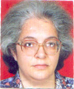
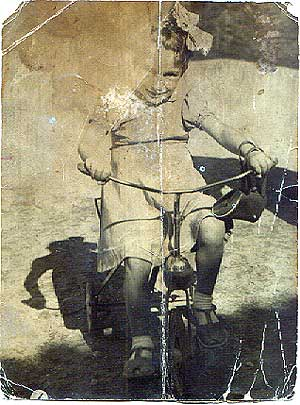
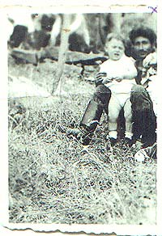
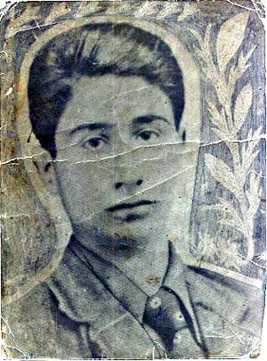

| ="pointer-events:none;cursor:default;" href="mailto:jerusalemiloveyou@msn.com"> |
||||||
| Where Is My Family?? - Sureyya Irsass |
Where Is My Family??I was Kidnapped from Jerusalem in 1948Sureyya Irsass |
|||||
|
Dear Jerusalem I love you, Firstly I would like to tell you thank you very much for your patience. You just gave me great power to find my family. And also sorry for my poor English. I already sent a fax to Al Quds newspaper owner Abdulbari Atwan about my story and asked him to help me. I thought that maybe he could publish my story in England and that way my family could read it, if they lived there, and be able to reach me. But he didn't send me any answer. Below I sent my whole story to you with the photos of my father and me. I really want to die in the land where I was born and I pray God every night for all Palestinians to enjoy peace and freedom. Please do get in touch with me, I am waiting for your good news and may God always keep your family safe and well. Until we talk again take care. |
My name is Saliha UCAR, however, as you will see below and as I discovered more than 50 years after I was born, I was born as Sureyya IRSASS around 1944-45 in Jerusalem. I was the daughter of a Palestinian mother and father with a brother 4 years older than I. We had a winter home in Jerusalem and a summer home in Gaza. In 1948, I was kidnapped from Palestine and brought to Turkey. The driver who kidnapped me never hid this fact. A short while later my father traced us and came to Turkey, and so a chase that was to go on for years started. The driver was from Erzincan so he took me directly there, and then left me with his uncle in a village named Surut. My father apparently came to Erzincan in search for me. Around that time the driver was seeing a young woman who was married and had a child, the driver told the woman that he kidnapped a daughter of a rich man and that they were after him. He said that they should run away together, that they could ask for ransom and get rich. The woman accepted so they took me and went to Antep. I can vaguely remember the stone building there. We stayed at that house with the woman. After a while the man disappeared then came back with money. From there we moved to Adana, when the money finished again the man went away and came back with money, but this time it took him longer to come back. So the woman started to work in a thread factory. While she was working there her arm got caught in a machine and she came home with her arm tied around her neck. The man came back a short while after and this time we moved to Izm�r. At first we stayed in a hotel then we moved in to a family house near a cemetery. The woman got pregnant and gave birth in the Millet Hastanesi (Peoples Hospital). After the birth we started traveling again, we went to the mountains and traveled around for a while, than we went to Turgutlu and from there to Salihli and then to a town called Demirci near Manisa. At the beginning of 1950 the driver said that if I was good and wasn't bad during the journey he would take me back to my father. After a very long journey we arrived in Gaza. When we came to the head of our street. I could recognize our house and wanted to run towards it, at that moment the driver saw someone and got very angry. He took my hand and dragged me to the car swearing. I don't know why but for some reason he was angry. We returned to Turkey. In 1955 the driver was called to the police station, they took me too. They ask the driver if I was his daughter and he said that I was, so they asked him why he didn't send me to school, he said because I didn't have a birth certificate. So they told him to get one and send me to school or they would punish him. So the woman the driver was with wrote to her mother. She bribed the local midwife and had a certificate done and came to Demirci. The birth date was 01.03.1955. Then through court order number 248-260 on the 4 of November 1957 they changed the date to June 1950. I still have this Id. In 1959, because the driver was worried that my father might turn up, we moved to Istanbul. I went to the Piyale primary school in Kas�mpasa; I was in 2A which was class number 136. In 1960 we leaved in Karagumruk, I went to the Mihrima Sultan primary school. At the beginning of 1961 we returned to Demirci. From there we went to village of Armutlu, and from there we moved to Izm�r. In 1969 the driver had a traffic accident and when he realized he was going to die he explained a lot. He said to me "be very careful, your father was a diplomat and you should be careful not to risk your life or your family life; that you shouldn't tell anyone anything. The whole thing is big enough anyway, try to reach your family discreetly". He died a week after the accident. After 1969, I applied to many places. At an international fair I went to the Palestinian Liberation Organization's stand and explained my situation to them. They told me that there were 5 million people like me and there wasn't anyone left there. They said there wasn't anyone to ask there, that it could only be investigated after the war. I found Yasser ARAFAT's fax number and had a petition written to him in Arabic. The fax was sent but we never received an answer. I called the Palestinian embassy in Ankara and they seemed very interested so I got on a bus and went to Ankara. When I got there Faiz Halil to whom I talked acted in a very distant manner and said that if I went to Jerusalem I'd be their guest, but he acted very coldly. I returned to Izm�r and called the presidential office and a secretary told me to fax the administrator Mr. Can Tezel. I faxed my petition to the given number and later called them to ask their opinion. They said that I should get a tourist passport and go to Jerusalem to the Turkish consulate. I called the consulate in Jerusalem and talked to Mrs. Nukhet and left my phone number. She talked to Faysal Huseini who was a minister at the Orient House (Eastern House?) in Palestine. She called me and said that there was a man here who had some questions, could I answer them. She asked me his questions and I answered them. After this phone call there was a time of silence. Meanwhile I got my passport and applied for a tourist visa as a Turkish citizen. First they gave me an 11-day visa, and then without showing any reason they canceled it. So I applied to the Italian Tourism Company in Istanbul and joined them as a regular tourist. In the November of 1998, for the first time after 50 years I stepped in Jerusalem. We settled in the hotel and I called Mrs. Nukhet to tell her that I arrived. Previously, I talked to Inci Kart who was a Ihlas news reporter and asked for help, and gave her the hotel phone number. The next morning Mrs. Inci came with her husband and they took me to the consulate. At the consulate I told Mrs. Nukhet everything I knew. She called the Orient House and asked for an appointment. Faysal Huseini accepted to see us, so we went with Mrs. Nukhet and her secretary who translated from English to Arabic for us. Faysal Huseini listened to what we said calmly. We returned to the consulate and they dropped me of at the hotel. I didn't tell the tour operators or the other tourists anything. We ate dinner but I didn't sleep at all that night, I was in my home nation, on the soil where I was born. I was so happy I was going to be reunited with my mother and my brother. In the morning I had breakfast and waited in the lobby. This time the consulate sent its own car and we went to Orient House with Mrs. Nukhet. At the Orient House a surprise awaited us. The man who gave us a promise wasn't there, he hadn't even come. Mrs. Nukhet said that she knew this would happen, that he'd ran away because he didn't want to take any responsibility. Towards the afternoon Mrs. Inci came and Mrs.Nukhet told her what happened and suggested that she took me to the mosque of Omar and that maybe I remember where my house was. So Mrs. Inci took me to the mosque and we went upwards from it. We passed various shops but I didn't see any house that resembled mine. As we wandered around one of the shop owners said you look Turkish if you are looking for someone maybe we can help you. This young man's name was Ahmet Dijani he walked around with us for a while and I told him my story. I said that my father was a descendant of Seybi Abbas. When he heard this name he took me to Luay Abbas's house in the garden of Mescidi Aksa. Luay Abbas told his mother about me. His mother said that her mother had been a good friend of my mother, that they visited each other, but that her mother died a few months back, that we should have come a few months ago. She told me that I shouldn't go to our house, that they'd shoot me when they se me at the head of the street. I told her that I didn't know my surname, She said it was IRSASS, she wrote it on a piece paper and gave it to me. SHIKH Abbas IRSASS. I found out my surname after 50 years. Upset, I returned to the hotel and talked to Mrs. Nukhet. She said, they might say you are in danger at your hotel come let's take you to your house, but don't go anywhere, if anything happens to you we'll be in trouble because you are our citizen.  I waited for my group and we went to dinner. Half way through dinner they called me to the lobby. Ahmet who walked around with us was there with 4 or 5 friends saying they wanted to see me. Opposite me sat Ebu Usame, on my left doctor Walid, next to him Ahmet, on my right were a few youths standing and next to Ebu Usame was his older brother. They welcomed me and asked me if my story was true. I begun to tell them things which I never told anyone else before. Ebu Usame bowed his head, I looked at Dr. Walid and he was staring at Ebu Usame accusingly. They asked me where did I find all these things out from. I told them that the driver had talked to Hasan at a coffee shop near the mosque of Omar, while they smoked their "nargile" and talked about the gold they got. When I said this, Ahmet said that I was wrong there was no coffee shop near the mosque. I told Ahmet to tell Ebu Usame whatever I told him, so he did. Ebu Usame said that there used to be a coffee shop near the mosque, that the driver had told a lot. He said that all I was saying was true. He bowed his head a bit more, he couldn't look at me. He said come with us lets take you to your house. I remembered what Mrs. Nukhet said so I refused. When we started to talk there were a few youths on my right now there were a lot. The manager of the hotel came and asked what was going on and said that the other tourists were getting bothered by it. The 20-25 people who gathered around us went away. After dinner I returned to my room and thought, what Luay Abbas's mother said was right. If I was to go to my house they'd shoot me. I called Mrs. Nukhet and told her what happened. She suggested that they move me to another hotel. I said that we were returning to Turkey the next day anyway there wasn't any need. The next morning we went to the Mescidi Aksa for the morning prayer. After the prayer we collected money among ourselves to give to the imam for the mosque to be renovated. He said he'd come to the hotel later to get it. We returned to the hotel. In the group was a lady who graduated from the American College, I asked her to help me see the imam. At that moment the tour operator S�rac Dilmen came and I told him a bit. The imam said that he knew my family and that he could help me. After we returned to Turkey I called Ahmet. Although he said that he'd help me he didn't, the imam likevise, they stayed silent as if nothing like this had ever happened. Trough my son-in law we met someone called Namluslu Muhammet Huseyin, his brother Yasser is a policeman near Ac�gol. They did some research then called me and said "we found your uncle at the Haifa port, he gave us 8 cell-phones and an amount of money not to tell you , we are forgetting this business, you do the same". They sold their conscience for a bit of money. In August 1999 I went to Jerusalem again. Mr. Sirac told me that he has been invited to a friend's house that evening, that maybe he could find something about my family. When he returned he said that they gave him a relative's phone number, he said he wasn't hopeful but I said let us call anyway. I told him to phone the number and say that the woman he mentioned was there with him. He did exactly as I told him and the woman said she will be there in 10 minutes and she was. She knew the situation, she got the names from me and left her phone number. She told us to call her the next day at 7 and left. We called the next day and she told us to get in a taxi and meet her. Mr. Sirac knew where we were going so we went. The woman met us on the way, we got into her van and she took us to a little house. There were two old women there, one of them was her mother, the other her aunt. Later I took out my family tree, she said that the names I gave her were correct, that my grandfather name was Saban. After sitting for a while we left and went to her house. She said that if the information I gave her was wrong she wouldn't have taken up this job, but all my information was correct and that's why she was going to help me. She got my add. And said that she has her own magazine and that she did a show on TV, that nothing could discourage her, that she'd seen Yasser Arafat without getting an appointment. I told her that if she was going to help she could look at the archives at the newspapers form 1948, that she'd be able to read what had happened. On the way back to Turkey, we stopped in Tel Aviv. They prayed in a mosque there and I cried because for the second time I was going back empty handed. I sat on the hill and was crying, thinking if I will ever be able to come back here again. When the tour bus driver saw me he asked Mr. Sirac why I was crying. Mr. Sirac briefly told him what happened and the driver said that he knew this family. He called Ibrahim Suleyman Irsass. I saw him run towards me as he spoke on his phone in English he asked me if my name was Sureyya. At that moment Mr. Sirac came and took the phone from him and they started speaking in Arabic. Ibrahim Suleyman said that he was a close relative of mine, and told them to bring me to him so he could see my face, but we were in Tel Aviv and if we turn back we'd miss the plane so he said he'd see me when he comes. So sadly but hopefully I returned to Turkey. Through a friend who knew English I told Hilda, she told me to write what I knew and sent it. She said that she found some stories about me in the archives, that apparently there was a photo of me with the driver that I should sent that also. I had a copy of the photo made, put it in an envelope with the information and sent it to Mr. Sirac. He took it to Hilda when he went to Jerusalem. My father's uncle said nothing, that was the only time I spoke to him. There was someone who was pushing those whom I was in contact with away from me. Either by threat or by money he was stopping them from helping me. What sort of a secret is there behind this that makes people say they didn't see, didn't hear and that they don't know. A month ago Mr. Sirac's secretary called me and said that they were coming to Izm�r to see me. I asked why and she said that there were people coming from Jerusalem to investigate, that they were first going to Manisa Demirci than they were going to meet me. I got hopeful again. The next day they called and told me to meet them in the lobby of the Buyuk Efes Hotel. I went there at the given time and after waiting for a while I decided to go home. Then I called home to see if there was any message from them, they had called and said they were coming. After a while they came, and with them was Mr. Sirac jewish partner. We talked and they told me to give up, that my relatives didn't want to split the inheritance. They said you lived here this long so what difference does it make if you find them after this. This wasn't the first time I was hearing these words, just like the others they were saying we are forgetting, you do the same. If I wanted money I'd have appointed a lawyer when I first went there and tried to get what ever I could. My uncle who is paying people to keep them quiet would probably have given me a little to. I wasn't after money I asked help from everyone I met. I want to see my mother in this life and once more return to the land where I was born. I just want this suffering, these tears to end. I want this exile to finish. I want to return to my homeland to die were I was born. This is any human beings natural right and natural desire. The owner of the hotel where I stayed in 1999, said " what are you doing here, your family has been in London since 1967. your brother took your mother there and they live there I heard that they were living in a farm outside London." I've been to Jerusalem twice on borrowed money, I am a pensioner and I don't have any financial resources. Going to London and finding my brother is a dream. I've briefly told you the story of 52 years, not one word is a lie or wrong. I haven't wrongfully accused anyone, I have written what I know and lived. I will be most grateful if you help me. I await your help and wish you the best in your work.
Sureyya Abdulrahman IRSASS My Present Name and address |


| Home From Jerusalem Culture Articles Pictures Previous Readers mail Links ="pointer-events:none;cursor:default;" href="mailto:jerusalemiloveyou@msn.com">Email |
| Falasteen P.O.Box 600308 Saint Paul MN 55106 Fax # (651) 746 0779 |